Navigation
Bilder von internationalen Lehrgängen:

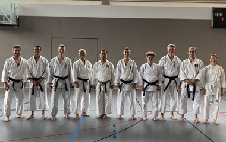
2025 Kenyukai Next Generation
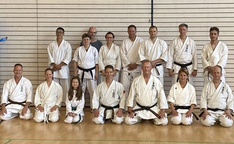
2025 mit Sensei Haberzettl in Hohenbrunn
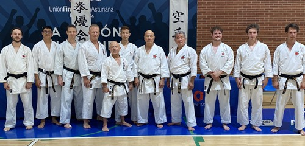
2024 mit Großmeister Kiyohide Shinjo
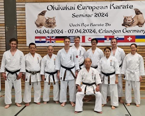
2024 mit Großmeister Tsutomu Nakahodo
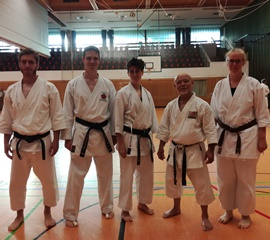
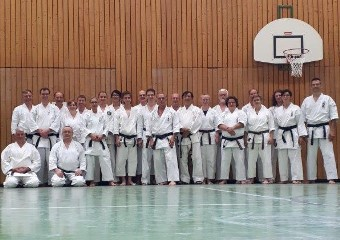
2019 mit Meister Narihiro Shinjo 2019 mit Großmeister Darin Yee
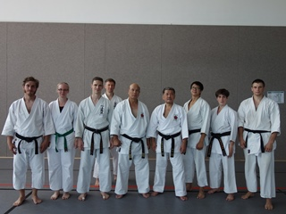
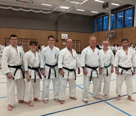
2018 mit Großmeister Kiyohide Shinjo 2018 mit Großmeister Kiyohide Shinjo
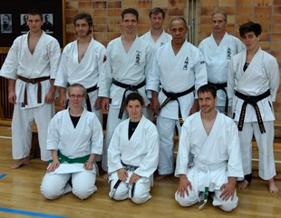
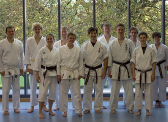
2017 mit Großmeister Thompson 2016 mit Meister Bruce Hirabayashi
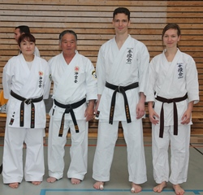
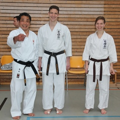
2014 mit Meister Yonamine 2014 mit Meister Okuhama
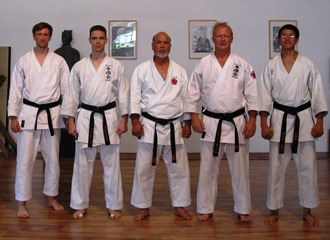
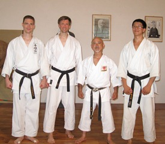
2012 mit Großmeister Kiyohide Shinjo 2012 mit Meister Narihiro Shinjo
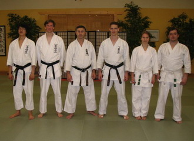
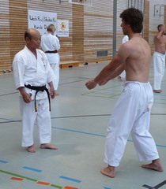
2011 mit Meister Gustavo Gondra 2009 mit Großmeister Tsutomu Nakahodo
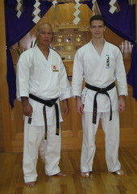
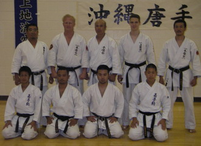
2008 in Okinawa bei Großmeister Kiyohide Shinjo 2007 in Austin mit Großmeister Kiyohide Shinjo
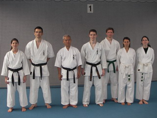
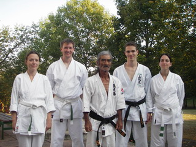
2006 mit Großmeister Ken Nakamatsu 2005 mit Großmeister Shinyu Gushi
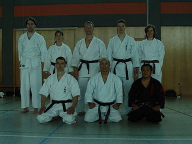
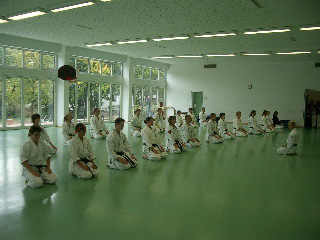
2003 mit Großmeister Kiyohide Shinjo 2003 mit Meister Takemi Takayasu